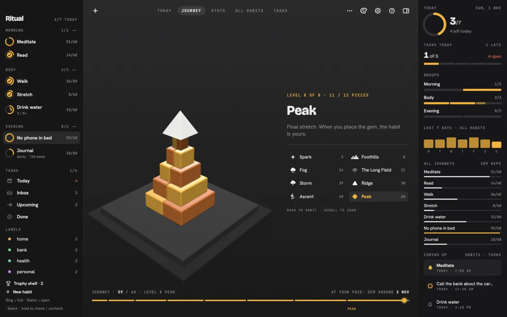

2019–2024
Vellore Institute of Technology
Integrated M.Tech in Computer Science, specializing in Data Science.
Bengaluru, India
Forward Deployed Engineer at DevRev
I build AI agents that can take action across real systems, and write evals to see where those workflows break.
One window for Claude Code sessions across editors and terminals.
A Mac app for habits and tasks. Every check-in adds a piece to a monument.
Save a job posting to Google Sheets in one click.

2019–2024
Integrated M.Tech in Computer Science, specializing in Data Science.
Aug 2023–May 2024
Built Python automation and prototyped retrieval-augmented tooling.
Nov 2024–present
Build and deploy AI agents with customer teams. Work across tool integrations, workflow reliability, and evals before rollout.
· Medium
Short updates on applied AI and my work at DevRev.
For work or collaborations, reach me on LinkedIn.